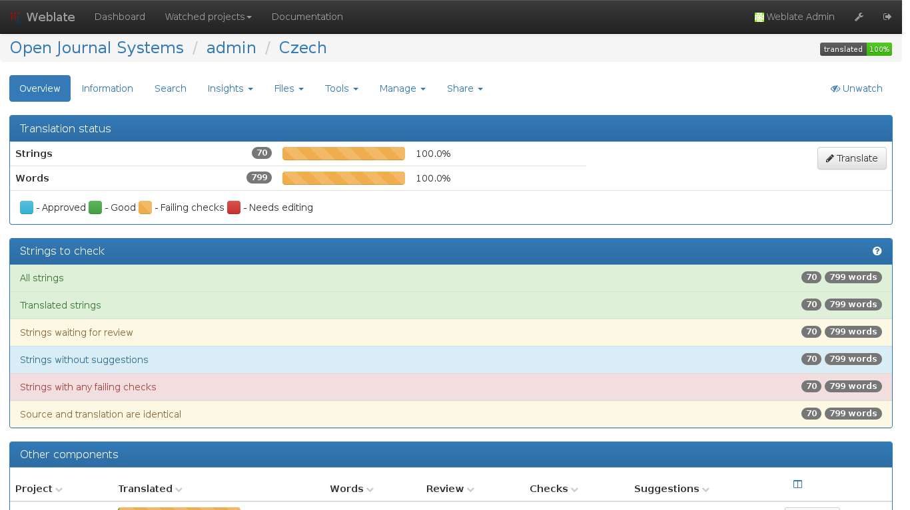

Explore use of a web-based, professional translation tool to better support localization of PKP software. Come up with a plan to further test and eventually implement this.
Suggestions
explore use of weblate
weblate: web-based translation tool
key features:
OSS
integration with GitHub
translation management: missing translations, percentage of completeness, suggested translations, glossary
make quick decision about format (XLIFF) and software (Weblate) (see also https://docs.google.com/spreadsheets/d/1rSp350oJEEb6PYOfjpMzQnlTNGOH_UiJDpZU2GbXWbE/edit# gid=0)
write XML-XLIFF converter
test requirements
explore Weblate
talk to CAT expert about software
prepare for wrap-up
Configuration
configure project (= OJS)
configure components (= files)
(optional) configure base file (= list of keys)
configure access control (= web access)
configure users (= users, reviewers, admins)
configure languages to match PKP software languages
component list
screenshot
component
screenshot
languages
screenshot
translating
screenshot
Changes
lose comments in XML files
optional: add notes (= descriptions) to some keys
Next actions (1)
form group/task force etc. working on this
put this on PKP's agenda and talk about support
optimize XLIFF converter (escaping, CDATA…)
test monolingual feature to imitate what we have today
Next actions (2)
test GitHub integration
related: which branch to commit to (do sign-offs completely within Weblate or commit to translation branch and cherry-pick/merge from there into master branch (or pull from Weblate git repository))
test PHP way of working directly with XLIFF files (or decide on another live format to be converted to from XLIFF)
consequences for adding new keys/strings to English while adding new code - what will change?